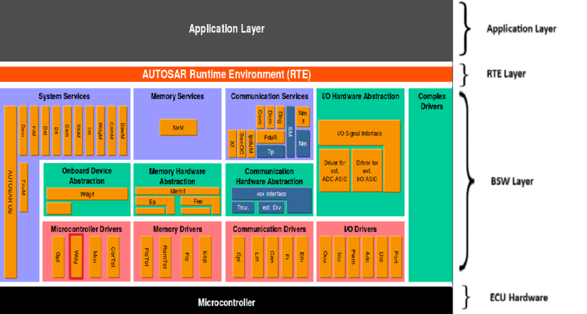
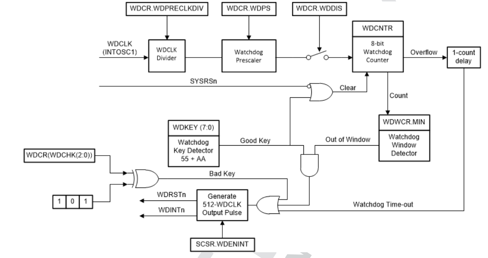
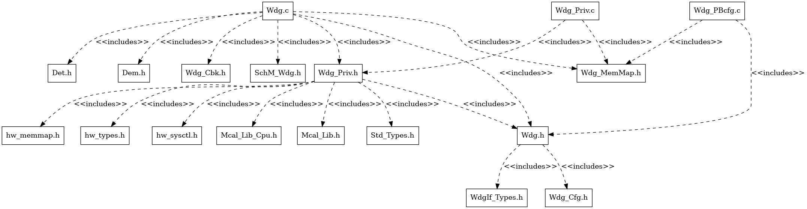
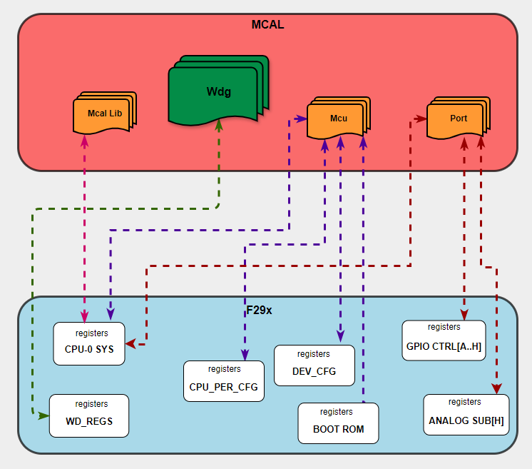

5.10. WDG Module
5.10.1. Acronyms and Definitions
Abbreviation/Term |
Explanation |
|---|---|
AUTOSAR |
Automotive Open System Architecture |
RTE |
Runtime Environment |
BSW |
Basic Software |
MCU |
Micro-Controller Unit |
MCAL |
Micro-Controller Abstraction Layer |
API |
Application Programming Interface |
DET |
Default Error Tracer |
DEM |
Diagnostics Event Manager |
HW |
Hardware |
SW |
Software |
I/O |
Input/Output |
WDG |
Watchdog |
5.10.2. Introduction
The Wdg module provides services for initialization, changing the operation mode and setting the trigger condition (timeout).

Fig. 5.34 WDG MCAL AUTOSAR
This document details AUTOSAR BSW WDG module implementation
Supported AUTOSAR Release |
: 4.3.1 |
|---|---|
Supported Configuration Variants |
: Pre-Compile, Link-Time & Post Build |
Vendor ID |
: WDG_VENDOR_ID (44) |
Module ID |
: WDG_MODULE_ID (102) |
5.10.3. Functional Overview
The watchdog module generates an output pulse 512 watchdog-clocks (WDCLKs) wide whenever the 8-bit watchdog up counter has reached the maximum value. The watchdog clock source is INTOSC1 which is 10 MHz clock. Software must periodically write a 0x55 + 0xAA sequence into the watchdog key register to reset the watchdog counter. The counter can also be disabled.

Fig. 5.35 WDG TIMER MODULE
5.10.4. Hardware Features
5.10.4.1. Hardware Features supported
The main features includes Servicing the Watchdog Timer, Minimum Window Check, Watchdog Reset or Watchdog Interrupt Mode and Watchdog Operation in Low-Power Modes. Details are explained in below sections.
5.10.4.1.1. Servicing the Watchdog Timer
The watchdog counter (WDCNTR) is reset when the proper sequence is written to the WDKEY register before the 8-bit watchdog counter overflows. The WDCNTR is reset-enabled when a value of 0x55 is written to the WDKEY. When the next value written to the WDKEY register is 0xAA, then the WDCNTR is reset. Any value written to the WDKEY other than 0x55 or 0xAA causes no action. Any sequence of 0x55 and 0xAA values can be written to the WDKEY without causing a system reset; only a write of 0x55 followed by a write of 0xAA to the WDKEY resets the WDCNTR.
5.10.4.1.2. Minimum Window Check
To complement the timeout mechanism, the watchdog also contains an optional “windowing” feature that requires a minimum delay between counter resets. To set the window minimum, write the desired minimum watchdog count to the WDWCR register. This value takes effect after the next WDKEY sequence. From then on, any attempt to service the watchdog when WDCNTR is less than WDWCR triggers a watchdog interrupt or reset. When WDCNTR is greater than or equal to WDWCR, the watchdog can be serviced normally.
5.10.4.1.3. Watchdog Reset or Watchdog Interrupt Mode
The watchdog can be configured in the SCSR register to either reset the device (WDRST) or assert an interrupt (WDINT), if the watchdog counter reaches the maximum value.
Reset mode: If the watchdog is configured to reset the device, then the WDRST signal pulls the device reset (XRS) pin low for 512 OSCCLK cycles when the watchdog counter reaches the maximum value.
Interrupt mode: When the watchdog counter expires, the watchdog asserts an interrupt by driving the WDINT signal low for 512 OSCCLK cycles. WDINT is mapped to the PIPE module to assert appropriate CPU interrupt line as configured.
5.10.4.1.4. Watchdog Operation in Low-Power Modes
IDLE mode: In IDLE mode, the watchdog interrupt (WDINT) signal can generate an interrupt to the CPU to take the CPU out of IDLE mode.
STANDBY mode:In STANDBY mode, clocks to the peripherals are turned off based on LPMCR, PCLKCRx and STANDBYEN registers. The CPU clock is gated when entering STANDBY mode based on LPMCR.LPM configuration but the watchdog remains functional since the module runs off the internal oscillator clock (INTOSC1). The WDINTsignal is applied to the Low Power Modes (LPM) block, so that the LPM block can be used to wake the CPU from STANDBY low-power mode.
5.10.4.2. Not supported Features
None
5.10.4.3. Non compliance
Below AUTOSAR design requirements are not supported for Wdg Driver:
SWS_Wdg_00136 : The function SetTriggerCondition shall reset the watchdog timeout counter according to the timeout value passed.
Rejection Reason : When user request non zero timeout value in Wdg_SetTriggerCondition API, it will be ignored. Due to hardware limitation, it is not possible to set the hardware watchdog counter value based on user provided timeout. Timeout value will always remain as per statically configured slow and fast mode timeout values.
SWS_Wdg_00034 : General design rule: configure Start address of trigger routine
Rejection Reason : Trigger routine information is not provided by hardware and not needed by the system.
SWS_Wdg_00076 : External Watchdog Driver
Rejection Reason : Internal watchdog is only supported, external watchdog support is not part of the current implementation.
For more details, Refer AUTOSAR_SWS_WdgDriver
5.10.5. Source files
📦f29h85x_mcal
┣ 📂build
┣ 📂docs
┣ 📂drivers
┃ ┣ 📂BSW_Stubs
┃ ┣ 📂Can
┃ ┣ 📂Dio
┃ ┣ 📂Gpt
┃ ┣ 📂hw_include
┃ ┣ 📂Mcal_Lib
┃ ┣ 📂Mcu
┃ ┣ 📂Port
┃ ┗ 📂Wdg
┃ ┃ ┣ 📂include
┃ ┃ ┃ ┣ 📜Wdg_Priv.h : Contains data structures and Internal function declarations.
┃ ┃ ┃ ┗ 📜Wdg.h : Contains the API declarations of the Wdg driver to be used by upper layers.
┃ ┃ ┣ 📂src
┃ ┃ ┃ ┣ 📜Wdg_Priv.c : Contains Functions that support the API for Wdg driver
┃ ┃ ┃ ┗ 📜Wdg.c : Contains the implementation of the API for Wdg driver.
┃ ┃ ┗ 📜CMakeLists.txt
┣ 📂examples
┣ 📂plugins
┣ 📜CMakeLists.txt
┗ 📜CMakePresets.json

Fig. 5.36 Wdg Header File Structure
5.10.6. Module requirements
5.10.6.1. Memory Mapping
Will be added in later release
5.10.6.2. Scheduling
None
5.10.6.3. Error handling
5.10.6.3.1. Development Error Reporting
Development errors are reported to the DET using the service Det_ReportError(), when enabled. The driver interface contains the MACRO declaration of the error codes to be returned.
5.10.6.3.2. Extended Production Error Reporting
Extended production errors are reported to the DEM using the service Dem_SetEventStatus(), when enabled. The driver interface contains the MACRO declaration of the error codes to be returned.
5.10.6.4. Error codes
Type of Error |
Related Error code |
Value (Hex) |
|---|---|---|
API service used in wrong context: |
WDG_E_DRIVER_STATE |
0x10 |
API service called with wrong / inconsistent parameter(s): |
WDG_E_PARAM_MODE |
0x11 |
API service called with wrong / inconsistent parameter(s): |
WDG_E_PARAM_CONFIG |
0x12 |
The passed timeout value is higher than the maximum timeout value: |
WDG_E_PARAM_TIMEOUT |
0x13 |
API is called with wrong pointer value |
WDG_E_PARAM_POINTER |
0x14 |
Invalid configuration set selection |
WDG_E_INIT_FAILED |
0x15 |
5.10.7. Safety Mechanism
TI Diagnostic Unique Identifier |
Summary |
Description |
|---|---|---|
CLK6 |
Internal Watchdog |
Error detection are notified to user and Reported to DET & DEM |
Note
More details of Safety Mechanisms can be found in Safety Manual.
5.10.8. Used resources
5.10.8.1. Interrupt Handling
5.10.8.2. Instance support
CPU instances |
supported |
|---|---|
CPU 1 |
YES |
CPU 2 |
NO |
CPU 3 |
NO |
5.10.8.3. Hardware-Software Mapping
Below image shows Wdg driver Hardware-Software mapping. For more information related to HW/SW mapping, refer the F29 Reference Manual.

Fig. 5.37 Wdg HW/SW Mapping
5.10.9. Integration description
5.10.9.1. Dependent modules
5.10.9.1.1. DET
This implementation depends on the DET in order to report development errors. The detection of development errors is configurable (ON / OFF), The switch WDG_DEV_ERROR_DETECT will activate or deactivate the detection of all development errors.
5.10.9.1.2. DEM
This implementation depends on the DEM in order to report Extended production errors and can be turned OFF. The switch WDG_DEM_ENABLE will activate or deactivate the detection of all extended production errors.
5.10.9.2. Multi-core and Resource allocator
Not Supported
5.10.10. Configuration
The Wdg Driver implementation supports multiple configuration variants, namely Wdg Post-Build config and Pre-Compile config. The driver expects generated Wdg_Cfg.h to be present as input file. The associated Wdg driver configuration generated source files are Wdg_Cfg.c or Wdg_Lcfg.c or Wdg_PBcfg.c
The generated configuration files should not be modified manually. The config tool Elektrobit Tresos should be used to modify the configuration files.
5.10.10.1. Configuration Parameters
5.10.10.2. WdgDemEventParameterRefs
Item |
|
|---|---|
Name |
WdgDemEventParameterRefs |
Description |
Reference to the DemEventParameter which shall be issued when the error “Setting a watchdog mode failed (during initialization or mode switch)” has occurred. |
Post-build-variant-multiplicity |
false |
Multiplicity-Configuration-Class |
– |
Link Time |
VARIANT-LINK-TIME |
Post-Build Time |
VARIANT-POST-BUILD |
Pre-Compile Time |
VARIANT-PRE-COMPILE |
Origin |
AUTOSAR_ECUC |
Post-Build-Variant-Value |
false |
Value-Configuration-Class |
– |
Link-Time |
VARIANT-LINK-TIME |
Post-Build-Time |
VARIANT-POST-BUILD |
Pre-Compile-Time |
VARIANT-PRE-COMPILE |
5.10.10.3. WdgGeneral
All general parameters of the watchdog driver are collected here.
5.10.10.3.1. WdgDevErrorDetect
Item |
|
|---|---|
Name |
WdgDevErrorDetect |
Description |
Switches the development error detection and notification on or off. |
Origin |
AUTOSAR_ECUC |
Post-Build-Variant-Value |
false |
Value-Configuration-Class |
– |
Link-Time |
VARIANT-LINK-TIME |
Post-Build-Time |
VARIANT-POST-BUILD |
Pre-Compile-Time |
VARIANT-PRE-COMPILE |
Default-value |
false |
5.10.10.3.2. WdgDisableAllowed
Item |
|
|---|---|
Name |
WdgDisableAllowed |
Description |
Compile switch to allow / forbid disabling the watchdog driver during runtime. |
Origin |
AUTOSAR_ECUC |
Post-Build-Variant-Value |
false |
Value-Configuration-Class |
– |
Link-Time |
VARIANT-LINK-TIME |
Post-Build-Time |
VARIANT-POST-BUILD |
Pre-Compile-Time |
VARIANT-PRE-COMPILE |
Default-value |
false |
5.10.10.3.3. WdgIndex
Item |
|
|---|---|
Name |
WdgIndex |
Description |
Specifies the InstanceId of this module instance. If only one instance is present it shall have the Id 0. |
Origin |
AUTOSAR_ECUC |
Post-Build-Variant-Value |
false |
Value-Configuration-Class |
– |
Link-Time |
VARIANT-LINK-TIME |
Post-Build-Time |
VARIANT-POST-BUILD |
Pre-Compile-Time |
VARIANT-PRE-COMPILE |
Default-value |
0 |
Max-value |
255 |
Min-value |
0 |
5.10.10.3.4. WdgInitialTimeout
Item |
|
|---|---|
Name |
WdgInitialTimeout |
Description |
This is read only parameter just to display the initial timeout value based on the default mode. The initial timeout (sec) for the trigger condition to be initialized during Init function. It shall be not larger than WdgMaxTimeout. (click on auto calculate before generating) |
Origin |
AUTOSAR_ECUC |
Post-Build-Variant-Value |
false |
Value-Configuration-Class |
– |
Link-Time |
VARIANT-LINK-TIME |
Post-Build-Time |
VARIANT-POST-BUILD |
Pre-Compile-Time |
VARIANT-PRE-COMPILE |
Default-value |
0.1 |
Max-value |
0.1 |
Min-value |
0.0 |
5.10.10.3.5. WdgMaxTimeout
Item |
|
|---|---|
Name |
WdgMaxTimeout |
Description |
This is read only parameter just to display the maximum timeout value based on the default mode. The maximum timeout (sec) to which the watchdog trigger condition can be initialized.Set the fast/slow mode timeout settings. (click on auto calculate before generating) |
Origin |
AUTOSAR_ECUC |
Post-Build-Variant-Value |
false |
Value-Configuration-Class |
– |
Link-Time |
VARIANT-LINK-TIME |
Post-Build-Time |
VARIANT-POST-BUILD |
Pre-Compile-Time |
VARIANT-PRE-COMPILE |
Default-value |
6.684672000000001 |
Max-value |
7.0 |
Min-value |
0.0 |
5.10.10.3.6. WdgRunArea
Item |
|
|---|---|
Name |
WdgRunArea |
Description |
Represents the watchdog driver execution area is either from ROM(Flash) or RAM as required with the particular microcontroller. |
Origin |
AUTOSAR_ECUC |
Post-Build-Variant-Value |
false |
Value-Configuration-Class |
– |
Link-Time |
VARIANT-LINK-TIME |
Post-Build-Time |
VARIANT-POST-BUILD |
Pre-Compile-Time |
VARIANT-PRE-COMPILE |
Default-value |
RAM |
Range |
RAM |
5.10.10.3.7. WdgTriggerLocation
Item |
|
|---|---|
Name |
WdgTriggerLocation |
Description |
Location (memory address) of the watchdog trigger routine. |
Origin |
AUTOSAR_ECUC |
Post-Build-Variant-Value |
false |
Value-Configuration-Class |
– |
Link-Time |
VARIANT-LINK-TIME |
Post-Build-Time |
VARIANT-POST-BUILD |
Pre-Compile-Time |
VARIANT-PRE-COMPILE |
Default-value |
NULL_PTR |
5.10.10.3.8. WdgVersionInfoApi
Item |
|
|---|---|
Name |
WdgVersionInfoApi |
Description |
Compile switch to enable / disable the version information API |
Origin |
AUTOSAR_ECUC |
Post-Build-Variant-Value |
false |
Value-Configuration-Class |
– |
Link-Time |
VARIANT-LINK-TIME |
Post-Build-Time |
VARIANT-POST-BUILD |
Pre-Compile-Time |
VARIANT-PRE-COMPILE |
Default-value |
true |
Refer AUTOSAR_SWS_WDGDriver section: 10 Configuration specification for configuration parameters details |
5.10.10.4. Steps To Configure Wdg Module
Open EB Tresos configurator tool, load Wdg and Dem modules. Select the Config Variant ( Precompile/Post-Build/Link-Time)
Open DEM module plugin and register DEM event “WDG_E_DISABLE_REJECTED” & “WDG_E_MODE_FAILED” to report extended production errors
Open WDG module plugin and make sure that required parameters and mode settings are configured correctly
Make sure that fastmode, slowmode configuration settings are provided
Save the configuration and generate the configuration.
5.10.11. Examples
The example application demonstrates use of Wdg module, the list below identifies key steps performed the example.
5.10.11.1. Wdg_Example_Service
5.10.11.1.1. Overview of Wdg_Example_Service
Wdg_Example_Service
EcuM_Init()
Initializes clock to 200 MHz using Mcu_Init()
Initializes pins as GPIO Outputs and GPIO Inputs using Port_Init()
Verify the wdg servicing without expiry on configured timeouts
5.10.11.1.2. Setup required to run Wdg_Example_Service
Install Code Composer Studio latest version
Install latest C29 compiler
Connect the hardware and power up
Connect the uart set up to check the log on serial console
5.10.11.1.3. How to run Wdg_Example_Service
Open CCS and Import Wdg_Example_Service example
Build project and start debug project
5.10.11.1.4. Sample Log of Wdg_Example_Service
App_Utils Initialization is completed !!!
Sample Application to test Wdg Interrupt & Servicing - STARTS !!!
Wdg GetVersionInfo API - STARTS !!!
WDG MCAL Version Info
---------------------
Vendor ID : 44
Module ID : 102
SW Major Version : 2
SW Minor Version : 0
SW Patch Version : 0
Wdg GetVersionInfo API - ENDS !!!
Wdg Initialization - STARTS !!!
Wdg Initialization - ENDS !!!
Wdg Max timeout duration in milliseconds is : 3342 !!!
Wdg servicing is called in loop, So interrupts will not be generated !!!
Wdg Example Service: Sample Application - Completes successfully !!!
5.10.11.2. Wdg_Example_Interrupt
5.10.11.2.1. Overview of Wdg_Example_Interrupt
Wdg_Example_Interrupt
EcuM_Init()
Initializes clock to 200 MHz using Mcu_Init()
Initializes pins as GPIO Outputs and GPIO Inputs using Port_Init()
Verify the wdg interrupts generation on timeout
5.10.11.2.2. Setup required to run Wdg_Example_Interrupt
Install Code Composer Studio latest version
Install latest C29 compiler
Connect the hardware and power up
Connect the uart set up to check the log on serial console
5.10.11.2.3. How to run Wdg_Example_Interrupt
Open CCS and Import Wdg_Example_Interrupt example
Build project and start debug project
5.10.11.2.4. Sample Log of Wdg_Example_Interrupt
App_Utils Initialization is completed !!!
Sample Application to test Wdg Interrupt & Servicing - STARTS !!!
Wdg GetVersionInfo API - STARTS !!!
WDG MCAL Version Info
---------------------
Vendor ID : 44
Module ID : 102
SW Major Version : 2
SW Minor Version : 0
SW Patch Version : 0
Wdg GetVersionInfo API - ENDS !!!
Wdg Initialization - STARTS !!!
Wdg Initialization - ENDS !!!
Wdg Max timeout duration in milliseconds is : 3342 !!!
Wdg Interrupt is generated after timeout!!!
Wdg Example Interrupt: Sample Application - Completes successfully !!!
5.10.11.3. File Structure
📦f29h85x_mcal
┣ 📂build
┣ 📂docs
┣ 📂drivers
┣ 📂examples
┃ ┣ 📂AppUtils
┃ ┣ 📂Can
┃ ┣ 📂Dio
┃ ┣ 📂Gpt
┃ ┣ 📂Mcu
┃ ┣ 📂Port
┃ ┣ 📂Wdg
┃ ┃ ┗ 📂 📂Wdg_Example_Service
┃ ┃ ┃ ┣ 📂CCS
┃ ┃ ┃ ┃ ┗ 📜📜Wdg_Example_Service.projectspec
┃ ┃ ┃ ┣ 📂📜Wdg_Service_Config
┃ ┃ ┃ ┃ ┣ 📂config
┃ ┃ ┃ ┃ ┃ ┣ 📜Dem.xdm
┃ ┃ ┃ ┃ ┃ ┣ 📜EcuM.xdm
┃ ┃ ┃ ┃ ┃ ┣ 📜Mcu.xdm
┃ ┃ ┃ ┃ ┃ ┣ 📜Os.xdm
┃ ┃ ┃ ┃ ┃ ┗ 📜Wdg.xdm : Generated EB Tresos config file in .xdm format
┃ ┃ ┃ ┃ ┣ 📂include
┃ ┃ ┃ ┃ ┃ ┣ 📜Dem_Cfg.h
┃ ┃ ┃ ┃ ┃ ┣ 📜EcuM_Cfg.h
┃ ┃ ┃ ┃ ┃ ┣ 📜Mcu_Cfg.h
┃ ┃ ┃ ┃ ┃ ┣ 📜Os_Cfg.h
┃ ┃ ┃ ┃ ┃ ┗ 📜Wdg_Cfg.h : Contains the generated pre-compiler configuration header.
┃ ┃ ┃ ┃ ┣ 📂src
┃ ┃ ┃ ┃ ┃ ┣ 📜Dem_Cfg.c
┃ ┃ ┃ ┃ ┃ ┣ 📜EcuM_Cfg.c
┃ ┃ ┃ ┃ ┃ ┣ 📜Mcu_PBcfg.c
┃ ┃ ┃ ┃ ┃ ┣ 📜Os_Cfg.c
┃ ┃ ┃ ┃ ┃ ┗ 📜Wdg_PBcfg.c : Contains the Post build configuration parameters.
┃ ┃ ┃ ┃ ┗ 📜CMakeLists.txt
┃ ┃ ┃ ┣ 📜CMakeLists.txt
┃ ┃ ┗ ┗ 📜Wdg_Example_Service.c : Example application for Wdg
┃ ┗ 📜CMakeLists.txt
┣ 📂plugins
┣ 📜CMakeLists.txt
┗ 📜CMakePresets.json
Note
Either Wdg_PBcfg.c OR Wdg_Lcfg.c OR Wdg_Cfg.c will be present based on selected config variant by user